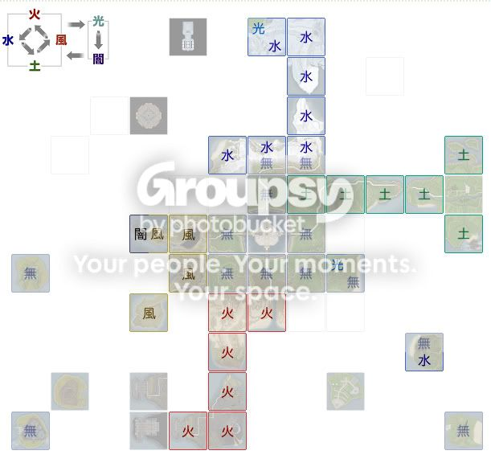

IV: New elemental system
มาถึงสิ่งสำคัญอีกสิ่งนึงของ
Extra update : Iris ซึ่งมีการปรับเปลี่ยนรายละเอียดต่างๆอีกมากมายทีเดียว
แต่ก่อนนั้น ระบบธาตุในเกมของเรามีบทบาทอยู่ก็แต่เพียงสายอาชีพที่มีสกิลโจมตีพลังธาตุเท่านั้น ซึ่งก็มีแต่สาย SU และ อาชีพอื่นๆอีกแค่เล็กน้อย
อีกทั้งความแรงของการแพ้-ชนะ ธาตุันั้นไม่รุนแรงนักจนคนส่วนใหญ่มองข้ามมันไป
ด้วยเหตุนี้เอง
Extra update : Iris จะทำให้ระบบธาตุกลับมามีความสำคัญอีกครั้งด้วยการ...
เปลี่ยนแปลงระบบธาตุขนานใหญ่ แบบที่จะมองข้ามมันเหมือนเมื่อก่อนไม่ได้อีกแล้วนั่นเอง
- สิ่งที่ควรรู้เกี่ยวกับ "ธาตุ"
ธาตุ
"ธาตุ (Element)" คือ อนุภาคมูลฐานของสสารหรือสารต่างๆที่ไม่อาจแบ่งแยกหรือเปลี่ยนแปลงในทางเคมีให้เป็นสสารอื่นได้ ประกอบไปด้วยโปรตอน นิวตรอน และอิเล็กตรอน(ยกเว้นไฮโดรเจนไม่มีอิเล็กตรอน) ธาตุแต่ละธาตุมีคุณสมบัิตทางเคมีแตกต่างกันออกไป...
/me

เอาใหม่ๆ
"ธาตุ (Element)" เป็นคุณสมบัติพื้นฐานที่มีอยู่ในพื้นที่(Field) มอนสเตอร์(Monster) ผู้เล่น(Character) และในการโจมตีต่างๆ(Skill) มีอยู่ทั้งหมดด้วยกัน
7 รูปแบบได้แก่...
1. ไร้ธาตุ / เวทมนตร์แขนงใหม่ (Newtype!?)
2. ธาตุพสุธา (Earth Element)
3. ธาตุวารี (Water Element)
4. ธาตุวายุ (Wind Element)
5. ธาตุอัคคี (Fire Element)
6. ธาตุแสงสว่าง (Light Element)
7. ธาตุความมืด (Dark Element)
วงจรการแพ้-ชนะระหว่างธาตุต่างๆนั้นคงเป็นที่ทราบกันดีอยู่แล้ว ดังรูปข้างล่างครับ

เพื่อความละเอียดที่มากขึ้น เราจะเขียนตารางผังการ แพ้-ชนะ ธาตุให้ชัดๆกันอีกครั้งดังนี้...

ตารางในส่วนของคอลัมน์ หมายถึงผู้รับการโจมตี(เป็นฝ่ายป้องกัน) และตารางในส่วนของแถว หมายถึงผู้จู่โจม(เป็นฝ่ายโจมตี)
ระดับความรุนแรงของพลังโจมตีที่เกิดขึ้นจะเรียงจากมากไปหาน้อยตามนี้ครับ
Extremely HIGH>>>
Very HIGH>>>
HIGH>>>100%>>>
LOW>>>
Very LOW>>>
Extremely LOW
ตารางนี้จะถูกใ้ช้อีกครั้งตอนท้าย เพื่อคำนวณผลที่เกิดขึ้นอย่างละเอียด ตอนนี้เอาแค่จำว่าอะไรชนะ-แพ้อะไรไว้ก่อนก็พอครับ
สกิลโจมตีกายภาพทุกประเภทที่ไม่ระบุว่ามีธาตุ และเวทมนตร์แขนงใหม่อย่างของสายอาชีพ Wizard นั้นถือว่าไม่มีธาตุใดๆติดอยู่
รวมไปถึงตัวผู้เล่นเปล่าๆที่ยังไม่ได้รับการเสริมธาตุด้วยวิธีใดวิธีหนึ่ง[จะกล่าวต่อไป] ก็ไม่มีธาตุเช่นกัน
ดังนั้นแล้วส่วนใหญ่เราจะคุ้นเคยกับความ "
ไร้ธาตุ" มากกว่าการมีธาตุ ซึ่ง
Iris card จะเข้ามามีบทบาทในส่วนนี้ต่อไป
ค่าธาตุ
#จากนี้ไปเมื่อพูดถึง "ธาตุ" หมายถึงธาตุหลัก 6 ธาตุ ไม่นับพวก
ไร้ธาตุนะครับ
ค่าธาตุ หมายถึงระดับความแรงของธาตุที่สถิตย์อยู่ในสิ่งต่างๆทั้งผู้เล่น มอนสเตอร์และพื้นที่ โดยบอกได้เป็นตัวเลขจำนวนเต็มมีค่าตั้งแต่ 0 จนถึง 100
-----: ค่าธาตุเป็น 0 หมายถึง
ไร้ธาตุ
-----: ค่าธาตุเิกิน 0 (1 ไปถึง 100) แสดงว่ามีสมบัิติของธาตุอยู่
-----: ค่าธาตุจากการคำนวณสามารถเกิน 100 ได้ แต่ถึงจะเกิน 100 ก็จะแสดงผลเหมือนค่าธาตุที่ 100 อยู่ดี
-----: ค่าธาตุของมอนสเตอร์และฟิลด์ไม่จำเป็นต้องมีค่าเป็น 100
-----: สกิลโจมตีที่มีธาตุเดียวในตัวเองมีค่าธาตุเป็น 100 เสมอ
Field
ทั่วโลกของเรา พื้นที่ต่างๆนั้นก็มีธาตุเป็นของตัวเอง ซึ่งแต่ละสถานที่ก็ีมีธาตุและค่าธาตุแตกต่างกันออกไป
การตรวจสอบธาตุของสถานที่ต่างๆนั้นทำได้โดยใช้สกิล Element Sense(Job25) ของอาชีพ Shaman หรืออาจบอกได้คร่าวๆจาก...
สถานที่ๆ อากาศร้อน พลังของธาตุ
ไฟจะแข็งแกร่ง
สถานที่ๆ อากาศเย็น พลังของธาตุ
น้ำจะแข็งแกร่ง
สถานที่ๆ อากาศกรรโชก พลังของธาตุ
ลมจะแข็งแกร่ง
สถานที่ๆ มีต้นไม้ใบหญ้าอุดมสมบูรณ์ พลังของธาตุ
ดินจะแข็งแกร่ง
โดยบริเวณที่อยู่ใกล้ๆกับภูต(Spirit) ประจำธาตุทั้ง 6 ซึ่งกระจายอยู่ตาม Map ต่างๆจะมีค่าความแรงของธาตุมากขึ้น
สถานที่ต่างๆในโลกอะโครเนียมีธาตุที่ค่อนข้างเจาะจงและแยกได้ไม่ยากนัก ดังรูปข้างล่าง

#ใช้แก้ขัดไปก่อน ไว้ทำอันอ่านง่ายๆมาแปะ; credit:
http://ecologie.sakura.ne.jp/map/index.htm
และเช่นกัน บาง Map นั้นก็ไม่มีธาตุได้ด้วย
สำหรับดันเจี้ยน(Dungeon) ก็มีธาตุในพื้นที่เช่นกัน แต่อาจมีได้มากกว่า 1 ธาตุพร้อมๆกันโดยที่แต่ละธาตุก็มีค่าธาตุแตกต่างกันออกไป เช่น East Dungeon ก็มีทุกธาตุผสมกันอยู่
ตรวจสอบค่าธาตุตัวละคร
(ยกมาจาก Part II)
เริ่มจากการเปิด window status สำหรับตั้งแต่ Iris update เป็นต้นไปมันจะมีช่อง
element เพิ่มมาให้
ซึ่งมันจะบอกว่าเราได้ผลอะไรจาก
Iris card ที่ใส่ไปแล้วบ้าง

บรรทัดบนนั้นเป็น
ค่าแก้ไขพลังธาตุด้านการโจมตี (Elemental attack correction: EAC)
ส่วนบรรทัดล่างเป็นค่าการ
แก้ไขพลังธาตุด้านการป้องกัน (Elemental defensive correction: EDC)
เตือนความจำจาก Part II
สำหรับคนที่จำได้หมดแล้วข้ามไปได้เลยครับ ในที่นี้จะขอทบทวนระบบธาตุที่เกี่ยวข้องกับ
Iris card ซักนิดเผื่อมีคนสงสัย
-----: Iris card บางใบจะมี
กลุ่มแก้ไขพลังธาตุ (Element Correction: EC) เป็นหนึ่งในคุณสมบัิติ เมือติดตั้งการ์ดลงไปก็จะเกิดผล
-----: แต่การเกิด
EC ไม่จำเป็นต้องมาจาก
Iris card เพียงอย่างเดียว แต่สามารถมีได้จากการ Buff โดยสกิลต่างๆ, ชุดและอาวุธที่เสริมค่าธาตุ(เช่นพวก Void Staff) โดยมีผลต่อการโจมตีไม่แตกต่างกัน
-----: ค่าแก้ไขพลังธาตุนี้จะไปเสริมให้กับการ
Attack(เพิ่มผลการโจมตี) หรือ
Defense(ป้องกันการโจมตี) ขึ้นกับตำแหน่งของอุปกรณ์ติดตั้ง โดยเราเรียก
ตัวแก้ไขพลังธาตุด้านการโจมตี(atkEVC) และ
ตัวเลขค่าแก้ไขพลังธาตุด้านการป้องกัน (defEVC) ตามลำดับ
-----: ค่า
EDC และ
EAC มีได้เพียงค่าเดียว ซึ่งสองส่วนนี้ไม่ได้เกี่ยวข้องกันแต่อย่างใด
-----: โดยสรุป ตัวละครหนึ่งๆจะต้องมี
EDC อยู่ 1 ธาตุเท่านั้นที่ความแรงค่าหนึ่ง และ
EAC อีก 1 ธาตุที่ความแรงค่าหนึ่ง
#กันงง
ถ้าพูดถึง
EDC และ
EAC จะหมายถึง "ชนิดของธาตุ"
แต่ถ้าพูดถึง
atkEVC และ
defEVC จะหมายถึง "ตัวเลขที่แสดงใน status"
- การโจมตี
กรณีที่ 1: สกิลโจมตีมีธาตุในตัวเอง
-----: ถ้าสกิลนั้นมี
ธาตุ ตรงกับ
ค่าแก้ไขพลังธาตุด้านการโจมตี (Elemental attack correction: EAC) ของตัวละคร ผลของความแรงธาตุคือ
atkEVC + ค่าธาตุของท่า
-----: ตรงข้าม หากสกิลมี
ธาตุ ไม่ตรงกับ EAC สกิลนั้นก็จะยังคงมีค่าธาตุเป็นไปตามเดิม
-----: อย่างไรก็ดี แม้จะรวมค่าความแรงธาตุได้มากกว่า 100 ผลที่เกิดขึ้นก็เทียบเท่าค่าธาตุ 100 อยู่ดี
ตัวอย่าง
1.
EACของตัวละครเป็นธาตุ
น้ำ มีค่า
atkEVCที่ 10 ยิงสกิลที่มีค่าความแรงธาตุ
น้ำ(เช่น Ice Arrow) 100 ==> ผลคือ...ธาตุในการโจมตีจะได้เป็น
น้ำ 110 ==> มีผลไม่ต่างกับเดิมที่
น้ำ 100
2.
EACของตัวละครเป็นธาตุ
มืด มีค่า
atkEVCที่ 100 ยิงสกิลที่มีค่าความแรงธาตุ
แสง(เช่น Holy light) 100 ==> ผลคือ...ธาตุในการโจมตีจะได้เป็น
แสง 100 ==> ธาตุที่ยิงไม่ตรงกับ
EAC จึงไม่มีผล
3.
EACของตัวละครเป็นธาตุ
น้ำ มีค่า
atkEVCที่ 10 ยิงสกิลที่มีค่าความแรงธาตุ
ลม(เช่น Lightening) 100 ==> ผลรวมธาตุในการโจมตีจะได้เป็น
ลม 100 ==> ธาตุที่ยิงไม่ตรงกับ
EAC จึงไม่มีผล
4.
EACของตัวละครเป็นธาตุ
น้ำ มีค่า
atkEVCที่ 30 ยิงสกิลที่มีค่าความแรงธาตุ
น้ำ 50 ==> ผลรวมธาตุในการโจมตีจะได้เป็น
น้ำ 80
กรณีที่ 2: สกิลกายภาพที่ไม่มีธาตุในตัวเอง
-----: [จากกรณี 1.] ผลของความแรงธาตุคือ
atkEVC + ค่าธาตุของท่า
-----: ค่าธาตุของสกิลกายภาพคือ
+0 ดังนั้น ผลของความแรงธาตุคือ
atkEVC เพียงอย่างเดียว
-----: ดังนั้นสกิลกายภาพที่โจมตีออกไปจะมี
ธาตุทันทีโดยเป็นธาตุตาม
EAC ของตัวละคร และมีค่าธาตุเท่ากับ
atkEVC ของตัวละคร
-----: พูดง่ายๆก็คือ สกิลกายภาพทั้งหมดจะมีธาตุทันทีถ้าตัวละครนั้นมี
EAC ที่ไม่ใช่
ไร้ธาตุขึ้นมา
กรณีที่ 3: สกิลเวทมนตร์ที่ไม่ีมีธาตุในตัวเอง
-----: [จากกรณี 1.] ผลของความแรงธาตุคือ
atkEVC + ค่าธาตุของท่า
-----: ค่าธาตุของสกิลกายภาพคือ
*0 ดังนั้น ผลของความแรงธาตุคือ
atkEVC*0 = 0
-----: สรุปไำด้ทัน... สกิลเวทย์
ไร้ธาตุจะไม่ได้รับผลจาก
EAC ของตัวละครไม่ว่ากรณีใดๆ
-----: พูดง่ายๆก็คือมันยังเหมือนเดิมไม่มีเปลี่ยน ไม่ว่าจะมีหรือไม่มี
Iris card ก็ตาม
กรณีเสริม: ผลของ Field
-----: Field จะส่งผลต่อตัวละครต่อเมื่อตัวละครนั้นมี
EAC ที่ไม่ใ่ช่
ไร้ธาตุสำหรับการโจมตีกายภาพ
-----: ถ้าการโจมตีมี
ธาตุ ตรงกับ Field ผลของความแรงธาตุคือ
atkEVC + ค่าธาตุของ Field
-----: ตรงข้ามถ้าการโจมตีมี
ธาตุ ไม่ตรงกับ Field การโจมตีจะยังคงมีค่าธาตุตามเดิม
-----: เมื่อรวมผลของทั้ง
EAC และ Field จะได้ว่า
ผลของความแรงธาตุ = ค่าธาตุของท่า + atkEVC + ค่าธาตุของField(ต้องตรงกับEAC หรือธาตุของท่าจึงจะแสดงผล)
ตัวอย่าง
1. ตัวละครไม่ได้ใส่การ์ดหรือเสริมธาตุใดๆ (ไม่มี
EAC) โจมตีกายภาพใน Field
น้ำมีค่าธาตุเป็น 50 ==> Field ไม่แสดงผล ==> ผลคือ...การโจมตีเป็นรูปแบบปกติ
2. ตัวละครไม่ได้ใส่การ์ดหรือเสริมธาตุใดๆ (ไม่มี
EAC) โจมตีสกิลที่มีค่าความแรงธาตุ
น้ำ(เช่น Ice Arrow) 100 Field
น้ำมีค่าธาตุเป็น 50 ==> ผลคือ...การโจมตีเป็นรูปแบบปกติมีความแรงธาตุ
น้ำเป็น 150(ท่า100+Field50) ==> มีผลไม่ต่างกับเดิมที่
น้ำ 100
3.
EACของตัวละครเป็นธาตุ
น้ำ มีค่า
atkEVCที่ 10 ยิงสกิลที่มีค่าความแรงธาตุ
น้ำ(เช่น Ice Arrow) 100 ใน Field
น้ำมีค่าธาตุเป็น 50 ==> ผลคือ...ธาตุในการโจมตีจะได้เป็น
น้ำ 160(ท่า100+atkEVC10+Field50) ==> มีผลไม่ต่างกับเดิมที่
น้ำ 100
4.
EACของตัวละครเป็นธาตุ
ลม มีค่า
atkEVCที่ 10 ยิงสกิลที่มีค่าความแรงธาตุ
น้ำ(เช่น Ice Arrow) 100 ใน Field
น้ำมีค่าธาตุเป็น 50 ==> ผลคือ...ธาตุในการโจมตีจะได้เป็น
น้ำ 150(ท่า100+Field50) ==> มีผลไม่ต่างกับเดิมที่
น้ำ 100
5.
EACของตัวละครเป็นธาตุ
น้ำ มีค่า
atkEVCที่ 10 ยิงสกิลที่มีค่าความแรงธาตุ
น้ำ(เช่น Ice Arrow) 100 ใน Field
ลมมีค่าธาตุเป็น 50 ==> ผลคือ...ธาตุในการโจมตีจะได้เป็น
น้ำ 110(ท่า100+atkEVC10) ==> มีผลไม่ต่างกับเดิมที่
น้ำ 100
6.
EACของตัวละครเป็นธาตุ
น้ำ มีค่า
atkEVCที่ 10 โจมตีทางกายภาพ ใน Field
น้ำมีค่าธาตุเป็น 50 ==> ผลคือ...ธาตุในการโจมตีจะได้เป็น
น้ำ 60(atkEVC10+Field50)
7.
EACของตัวละครเป็นธาตุ
น้ำ มีค่า
atkEVCที่ 10 โจมตีทางกายภาพ ใน Field
ลมมีค่าธาตุเป็น 50 ==> ผลคือ...ธาตุในการโจมตีจะได้เป็น
น้ำ 10(atkEVC10) ==> Field ไม่แสดงผลในกรณีนี้
จัดตัวอย่างไปเยอะๆ กันเข้าใจผิด เยอะไปอย่างว่ากันน้า~
- การป้องกัน
เนื่องจากตัวละครของเราๆ เริ่มต้นจาก การป้องกันที่
ไร้ธาตุ ก่อนเสมอ เลยอธิบายรวมๆไปเลยละกัน
การป้องกันจากผลของ EDC
-----: ค่าป้องกันของตัวละครที่สวมใส่ Equipment ซึ่งปรับเปลี่ยนธาตุ หรือติดตั้ง
Iris card จะมี
EDC ประจำตัวทันที
-----: EDC ไม่เกี่ยวข้องกับ
EAC แม้แต่น้อย จะแสดงผลเมื่อ "ถูกการโจมตีที่มีธาตุ" เท่านั้น
-----: ค่า
EDC มีลักษณะไม่ต่างกับค่าธาตุ คือมีค่าตั้งแต่ 0 ถึง 100 และสามารถเกิน 100 ได้ในการคำนวณ แต่ส่งผลสูงสุดที่ค่า 100 เช่นกัน
ผลของ Field
-----: Field จะส่งผลต่อตัวละครต่อเมื่อตัวละครนั้นมี
EDC ที่ไม่ใ่ช่
ไร้ธาตุ เท่านั้น
-----: ในกรณีที่ Field มี
ธาตุ EDC ตรงกับของตัวละคร ผลของค่าป้องกันธาตุคือคือ
defEVC + ค่าธาตุของ Field
-----: ในกรณีที่ Field มี
ธาตุไม่ตรง กับ
EDC ของตัวละคร ผลของค่าป้องกันธาตุคือคือ
defEVC เท่านั้น
ตัวอย่าง
1. ตัวละครไม่ได้ใส่การ์ดหรือเสริมธาตุใดๆ (ไม่มี
EDC) ถูกโจมตีกายภาพใน Field
น้ำมีค่าธาตุเป็น 50 ==> Field ไม่แสดงผล ==> ผลคือ...คิดความเสียหายเป็นรูปแบบปกติ
2. ตัวละครไม่ได้ใส่การ์ดหรือเสริมธาตุใดๆ (ไม่มี
EDC) ถูกโจมตีโดยสกิลที่มีค่าความแรงธาตุ
น้ำ(เช่น Ice Arrow) 100 ใน Field
น้ำมีค่าธาตุเป็น 50 ==> ผลคือ...คิดความเสียหายเป็นรูปแบบปกติ(คิดเพิ่มแต่ฝั่งที่โจมตี)
3.
EDCของตัวละครเป็นธาตุ
น้ำ มีค่า
defEVCที่ 10 ยืนอยู่ใน Field
น้ำมีค่าธาตุเป็น 50 ==> ผลคือ...ได้ค่า
defEVC ธาตุ
น้ำ เป็น 60(defEVC10+Field50)
4.
EDCของตัวละครเป็นธาตุ
น้ำ มีค่า
defEVCที่ 10 ยืนอยู่ใน Field
ไฟมีค่าธาตุเป็น 50 ==> ผลคือ...ได้ค่า
defEVC ธาตุ
น้ำ เป็น 10(defEVC10) ==> Field ไม่แสดงผลนั่นเอง
5.
EDCของตัวละครเป็นธาตุ
น้ำ มีค่า
defEVCที่ 50 ยืนอยู่ใน Field
น้ำมีค่าธาตุเป็น 100 ==> ผลคือ...ได้ค่า
defEVC ธาตุ
น้ำ เป็น 150(defEVC50+Field100) ==> ผลเทียบเท่าค่าธาตุ
น้ำ ที่ 100
- สถานะผิดปกติ
สถานะผิดปกติก็สร้างธาตุให้กับเราได้เช่นกัน โดยไปเปลี่ยน
"ค่าแก้ไขพลังธาตุด้านการป้องกัน (Elemental defensive correction: EDC)" ชั่วคราว
มีสถานะผิดปกติแค่ 2 ชนิดเท่านั้นที่ทำเช่นนี้ได้แก่....
เมดูซ่า(หิน) ได้
EDC เป็นธาตุ
ดิน โดยมีค่า
defEVC เป็น 100
เยือกแข็ง ได้
EDC เป็นธาตุ
น้ำ โดยมีค่า
defEVC เป็น 100
- ผลของ EVC และความรุนแรงของระบบธาตุใหม่
ระดับพลังธาตุ (Elemental Level: ELv)
-----: ค่าธาตุที่ระดับต่างๆจะทำให้เกิด
ระดับพลังธาตุ แตกต่างกันออกไป ซึ่งส่งผลโดยตรงต่อ
พลังโจมตี และ
พลังป้องกัน
-----: ยิ่ง
ระดับพลังธาตุ(ELv) สูงขึ้นเท่าใด ผลที่เกิดต่อตัวละครจะรุนแรงขึ้นเท่านั้น
คล้ายคลึงกับในส่วนของ
กลุ่มเพิ่มความสามารถ (Ability Vector: AV) ที่มีการคำนวณรวมตัวเลข
เวกเตอร์ (Vector) เพื่อให้ได้
ระดับการปลดปล่อย (Releasibility Level: RLv) ที่สูงขึ้น
ส่วนของ
EVC เอง ก็มีเช่นกัน โดยแยกเป็นสองส่วนคือ
ระดับพลังธาตุด้านการโจมตี หรือ Elemental Level(attack): atkELv
และ
ระดับพลังธาตุด้านป้องกัน หรือ Elemental Level(defense): defELv
ทั้งสองแบบใช้วิธีิคิดเดียวกัน โดยดูได้จากตารางข้างล่างนี้